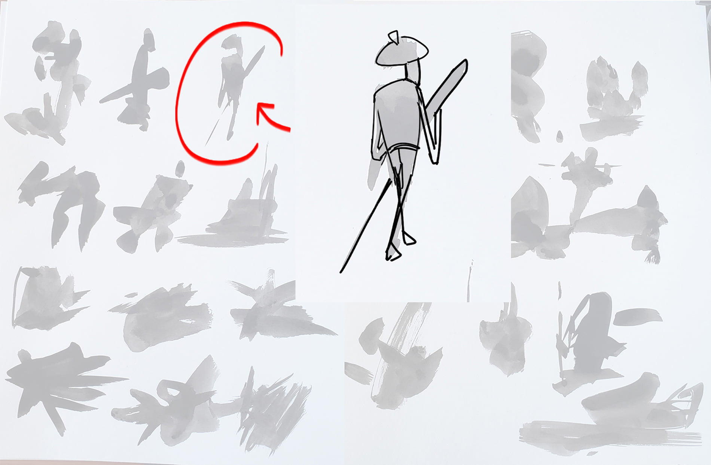

For this project I was tasked with the challenge of creating both a finished character and illustrating the world they live in.
At first we were tasked with creating ink blots to develop character silhouettes. Character design is strongly influenced by silhouette and shape language; by using ink blots we can distill our focus to pure shapes created from ink.

The following silhouette of the blot I settled on showed the greatest potential for generating a flushed out character.
The ink blot eventually lead to me creating a gondolier living in Venice. Inspired by Igor from Ratatouille and Jafar from Aladdin, I gave him a hunchback along with a sad and droopy face.

Finally the illustration here is meant to portray our saddened gondolier and how they sit within their surroundings. Being within the city of romance with no sight of his true love, our gondolier sits in isolation rowing slowly within the canals of Venice.